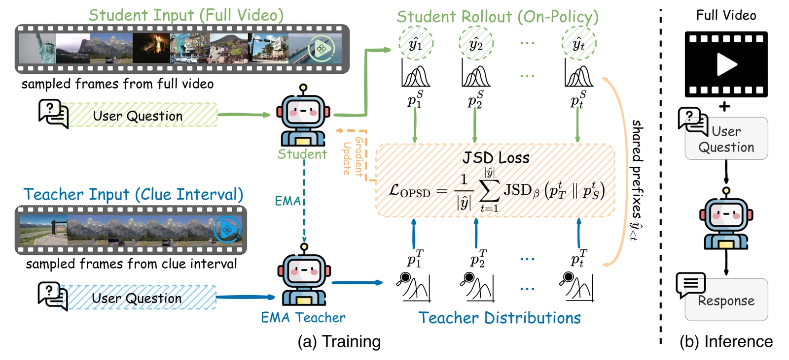
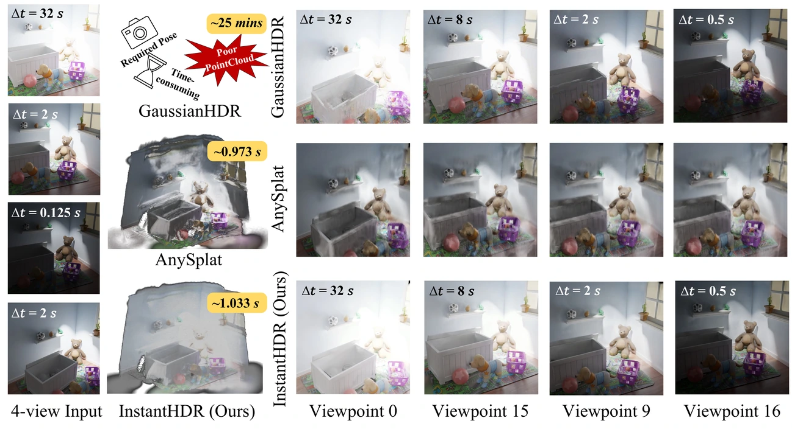
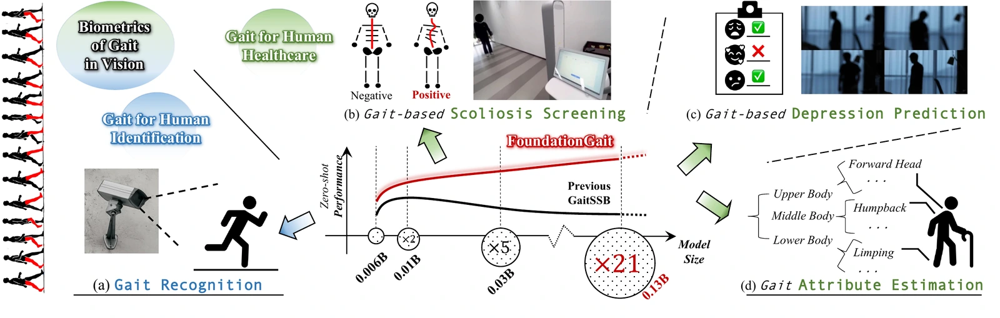
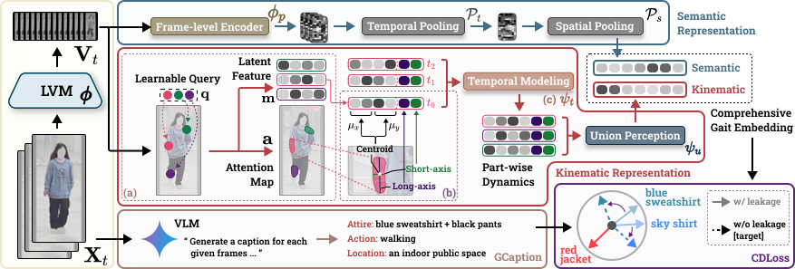
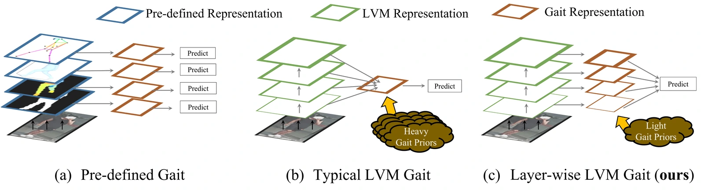
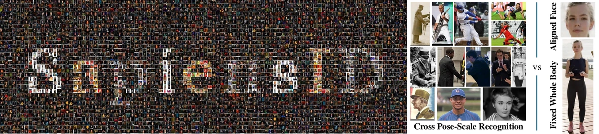
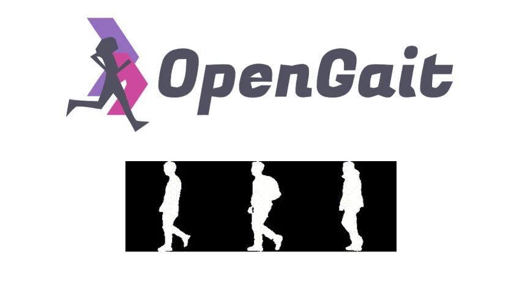

Dingqiang Ye
Email: bugjudger [at] gmail [dot] com
Google Scholar /
Github /
CV
I am a second-year Ph.D. student in Electrical and Computer Engineering at Johns Hopkins University,
advised by Prof. Vishal Patel.
I earned my M.Eng. (2025) and B.E. (2022) from SUSTech,
advised by Prof. Shiqi Yu.
In 2024, I was also fortunate to spend eight months as a research scholar at Michigan State University,
supervised by Prof. Xiaoming Liu.
My research goal is to develop intelligent recognition systems that can accurately re-identify objects in the physical world and have a positive impact on people's lives.
To this end, my research interests lie at vision foundation models, object re-identification and generative AI.
Currently, I am working on leveraging large vision models to identify human subjects at a distance.
Publications ( show selected / show by date / show by topic )
Topics: Computer Vision / (* indicates equal contribution and † indicates equal advising)

Where to Look Matters: On-Policy Self-Distillation for Long-Video Understanding
Kaishen Wang, Dongdi Zhao, Yijun Liang, Dingqiang Ye, Ruibo Chen, Heng Huang, Di Fu
arXiv 2026
/
Paper

InstantHDR: Single-forward Gaussian Splatting Initialization for HDR 3D Reconstruction
Dingqiang Ye*, Jiacong Xu*, Jianglu Ping, Yuxiang Guo, Chao Fan, Vishal M. Patel

Silhouette-based Gait Foundation Model
Dingqiang Ye, Chao Fan, Kartik Narayan, Bingzhe Wu, Chengwen Luo, Jianqiang Li, Vishal M. Patel

Unlocking Motion from Large Vision Models with a Semantic and Kinematic Duality for Gait Recognition
Zhanbo Huang, Dingqiang Ye, Xiaoming Liu, Yu Kong

BiggerGait: Unlocking Gait Recognition with Layer-wise Representations from Large Vision Models
Dingqiang Ye*, Chao Fan*, Zhanbo Huang, Chengwen Luo, Jianqiang Li, Shiqi Yu, Xiaoming Liu

SapiensID: Foundation for Human Recognition
Minchul Kim, Dingqiang Ye, Yiyang Su, Feng Liu, Xiaoming Liu
BigGait: Learning Gait Representation You Want by Large Vision Models
Dingqiang Ye*, Chao Fan*, Jingzhe Ma, Xiaoming Liu, Shiqi Yu
Experience
Research Scientist Intern, TikTok
May 2026 -- Aug. 2026Self-improving Agents in Long Video Understanding
Research Scholar, Michigan State University
Apr. 2024 -- Nov. 2024
Working on an IARPA-funded program, BRIAR.
Human Recognition at Long Range and from High Altitude
Software Engineer Intern, Tencent
Jun. 2021 -- Sep. 2021Worked for WeTV, one of China's largest online video platforms, backend development team.
Teaching
Teaching Assistant, SUSTech
Sep. 2019 -- Jul. 2023
Projects

Contributor, OpenGait
Jul 2022 -- Apr 2024A flexible and extensible gait analysis project. The corresponding paper has been accepted by CVPR'2023 as a highlight paper.
Leader, SUSTech Tower Defense Game
Sep 2020 -- Jan 2021A Tower Defence Game based on Unity 3D, using scale models of Minecraft SUSTech.